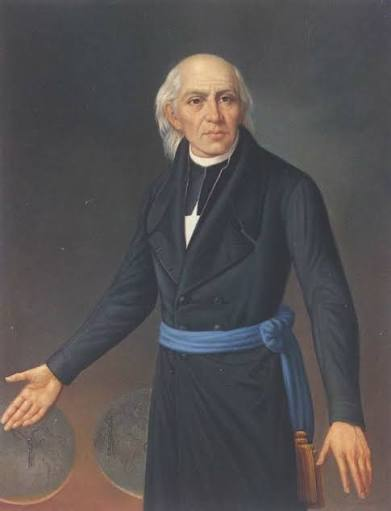

Personajes Ilustres
Líderes e ideólogos clave en la historia del movimiento independentista.

Padre de la PatriaMiguel Hidalgo
Inició la gesta independentista en 1810 convocando al pueblo al levantamiento armado por la libertad.
 Estratega e Ideólogo
Estratega e Ideólogo
José María Morelos
Líder militar que le dio estructura política e institucional a la revolución con los Sentimientos de la Nación.
 Líder Militar
Líder Militar
Ignacio Allende
Capitán del ejército que coordinó las estrategias militares iniciales de la lucha insurgente.
 Consumador
Consumador
Vicente Guerrero
Insurgente que mantuvo viva la resistencia armada en el sur y pactó la consumación de la Independencia.
 La Corregidora
La Corregidora
Josefa Ortiz de Domínguez
Pieza clave de la conspiración de Querétaro que envió el aviso oportuno cuando la causa fue descubierta.